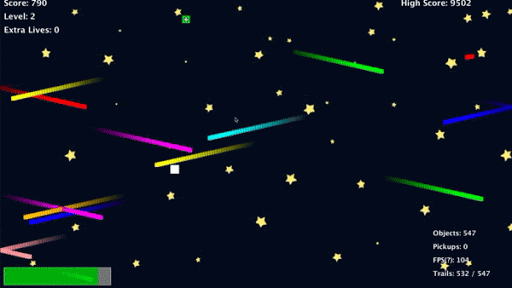
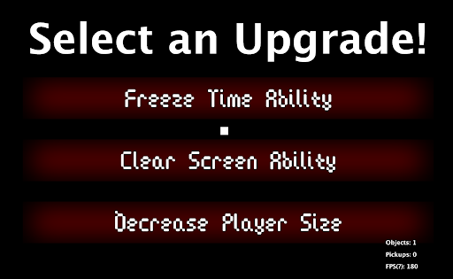
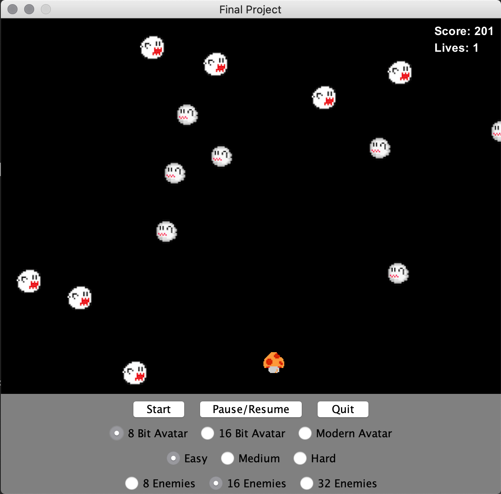

Space:

Water:

Irrelephant Games has been hard at work making improvements to the game Loehle’s Sandbox, which we inherited from the company Mediocre Studios, whom we acquired last year. We have made significant enhancements and performed much-needed bug fixes, which have helped bring the game up to company standards, in line with our vision statement:
We create modern takes on classic arcade games, offering a rich and rewarding experience that players want to come back to.
Loehle’s Sandbox has become significantly more rewarding to play with the addition of new game sounds, power-ups, themes and support for arrow keys and game controllers. This project exists because Irrelephant Games wants to expand our portfolio to include an avoidance game, which we expect to be the “next big thing” in PC gaming this year. It will allow us to break into a new market and compete with other titles like Abyss. However, we believe that our game stands out from the competition due to its combination of rich features and advanced enemy gameplay.
Our work was organized using a backlog and work plan. Our backlog was prioritized with game breaking bugs being the most important, enhancements being second, and minor bugs coming in third. We also wrote a prioritized bug and enhancement report, where we made a chart that was color-coded and sorted by priority. We classified these items in terms of both effort and risk. We decided to work on the high-priority bugs first because they had the biggest impact on the user experience. Next, we made minor enhancements that were lower-effort so we could add meaningful improvements early on in the development process. We believed that if we fixed all of the bugs first we would not have enough time to make enhancements that had a meaningful impact on the game. By working on enhancements after fixing the major bugs, we gave ourselves time to not only make interesting additions to the game but to also troubleshoot any new issues that may have come up. After taking care of these minor enhancements, we focused on the smaller bugs that made the user experience annoying but were not significantly disruptive. This allowed us to make the game more polished. Lastly, we implemented the larger feature enhancements, since they would take the most time and we wanted to get all the bugs fixed before making significant changes. By saving this until the end, we also gave ourselves time to troubleshoot any issues that may have arisen when making these major enhancements.
Our process management strategy evolved throughout our work on the project. Originally, we planned to use Trello, Google Drive, and text messaging for project management, and GitHub for code management. However, we eventually stopped using Trello, as the team decided that it was not necessary for a small project like Loehle’s Sandbox. However, Google Drive was crucial in our workflow, as we relied heavily on its collaboration features and used it to build reports and presentations. Real-time multi-user editing allowed us to work together remotely, while version history allowed us to keep track of the sections that each team member contributed to. Text messaging was also a key part of our process management strategy. It is a ubiquitous technology that everyone has access to, and it allowed us to easily communicate with the entire group. GitHub was another important part of our success with this project. It allowed us to host our project for free. It also let us use Git, which gave us access to version control and the ability to collaborate. Team members edited the code in either Eclipse or IntelliJ.
Our software was verified by testing each enhancement and bug fix on multiple machines with different operating systems. Each enhancement was tested a number of times to ensure the quality of the product as well to ensure there were no bugs present. We followed a test pattern for each test we performed to ensure that they were done correctly. The code was then revisited and improved upon to ensure quality and efficiency.
Alien Boss Bug: the Alien boss was immortal and could not be defeated
Rocket Boss Alignment Bug: the Rocket boss would not attack directly at the player, being slightly offset
Before and After:
Screen Size Bug: The screen previously was set to 800x600, now the screen works on all computers regardless of screen size running at a resolution of 1920x1080
Aspect Ratio Bug: The game works regardless of display aspect ratio
Before and After:
Boss Enhancements: The Alien boss now shoots bombs and the rocket boss shoots rockets on higher levels
Power-Ups: Five power-ups (health, freeze, extra life, shrink, coin) were added
Upgrade Screen: Upgrade screen was completed, allowing the user to gain an upgrade after defeating boss levels
Power-Ups
Upgrade Screen
Arrow Keys: In addition to WASD keys, the player can now move using the arrow keys
Controller: Game controller support was added, JInput was paired with jampad’s key mapping library which was used to allow controller support to function properly, and specific controller functionality was added for current features in place.
Themes: The ability to pick between two art styles: space and underwater
Space:
Water:
HUD Additions: Player health, damage resistance, regeneration, and wave progression were added to the heads up display
Audio Overhaul: Sounds for different aspects of the game were added. The main menu and the game have their own soundtracks. Sound effects are played when gathering power-ups, when the player takes damage, when the user pauses or unpauses the game, and when the player loses the game and hits the game over screen.
Commented Code: As one of the tasks in the final scrum cycle, we went back and commented the code. We described our new changes, removed unnecessary comments and updated older pre-existing comments to make them more concise and informative.
Update List of Known Issues: We also added a list of known issues in the current version of the product we will be passing on to the next team. We did this to give the next team a solid foundation to start from while also giving them insight into the areas that we struggled in.
Removing Unnecessary Files: We removed compiled bytecode (.class files), a second unused images folder, and git data ( the .git folder) from the project. These files are unnecessary for the future team and were taking up extra space.
Zipping the Project: After removing the unnecessary files, we added the remainder of the project to a zip archive, maintaining the project structure so the next group can import it into their own IDEs. The next team will be given access to a well-organized project.
The second project is a simple avoidance game with one enemy (boo from mario). As an avoidance game, the objective is for the player to control their sprite (in this case a white cube) while lasting as long as they possibly can by avoiding contact with enemy projectiles. Enemy projectiles come in many forms, such as alien spaceships, asteroids, and light beams. Some projectiles can be avoided by moving out of the general direction of the object, while some enemy projectiles possess the ability to track the player character. Every fifth level is a “boss level” where the player must dodge rays shot by an alien boss character or avoid a rocket that tracks the player down. The game lasts until the player gets hit by a boo, at which point a game over screen is displayed and his/her high score is recorded.
Overall, the game is playable but lacking in depth. It is suitable for a quick play, but not much else. The only thing that can potentially hook players in is wanting to surpass the current high score. There is nothing that currently encourages replayability such as in-game rewards.
